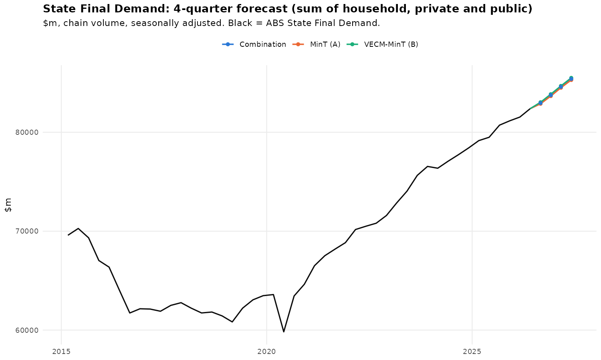
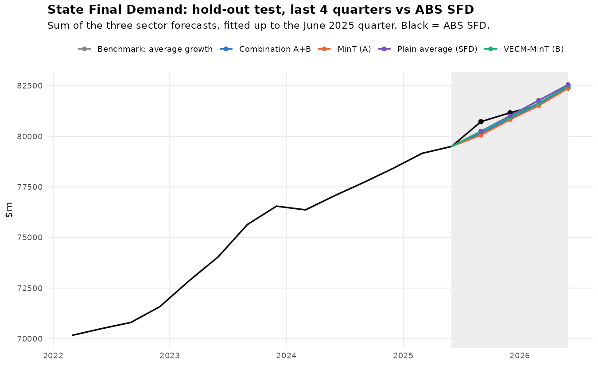
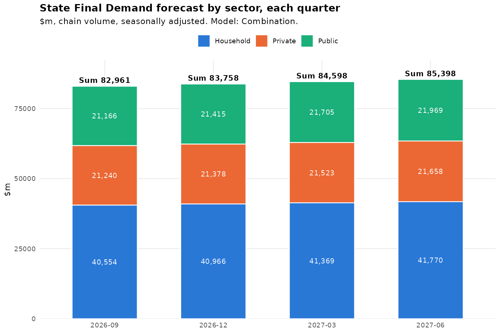
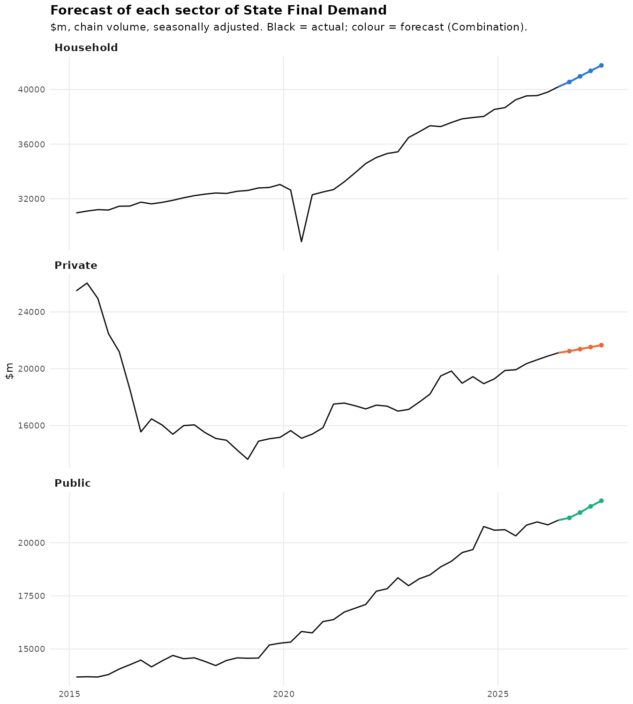

Western Australia State Final Demand: 4-quarter forecast
State Final Demand is the sum of household consumption, private investment and public spending. Each sector is modelled from its components using ARIMA and VECM models, reconciled so the parts add up to the total (MinT). The forecast is re-estimated automatically after every ABS National Accounts release.
Loading…
Quarterly growth: actual and forecast
Quarter-on-quarter growth, 100 × Δlog (≈ % change). Actual ABS data, then the next four quarters from each model.
Forecast by sector (headline model)
Combination A+B, $m chain volume, with each sector's contribution to SFD growth.
Hold-out test: last 4 quarters
Models refitted without the last four quarters, then compared with what the ABS actually published. A ratio below 1 beats the plain-average benchmark.
Model output
Charts produced by the R pipeline on every run.

SFD level and 4-quarter forecast.

Hold-out test against the published ABS series.

Forecast split by sector.

Household, private and public sector forecasts.
Method
Data: ABS 5206.0 Table 30 (Western Australia), seasonally adjusted chain volume measures, quarterly from 1985. Downloaded and reshaped automatically.
Stationarity: ADF and KPSS tests on every series in levels and differences. A COVID dummy handles 2020.
Model A: an ARIMA for each sector total and each of its components, reconciled with MinT (shrinkage) so that the components add up to the total.
Model B: a VECM on each sector's cointegrated block (household essentials vs discretionary spending; ownership transfer costs vs consumption; state and local consumption vs investment), plus ARIMA for the rest, then MinT.
Headline: the average of A and B. SFD is the sum of the three sector forecasts, compared with an average-growth benchmark.